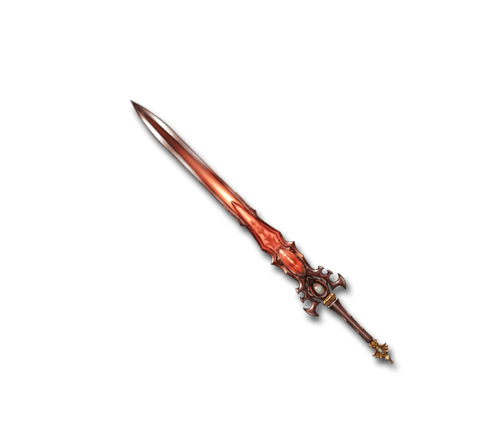
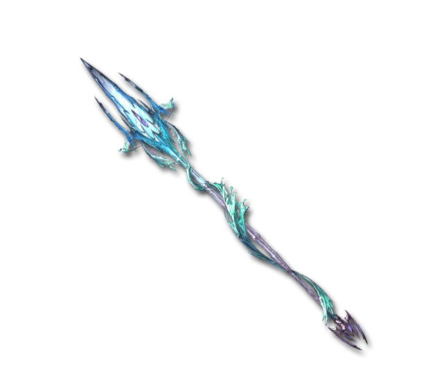
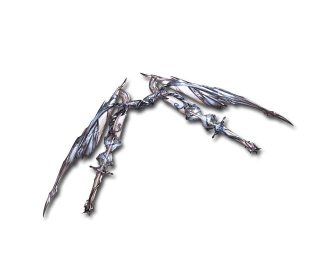
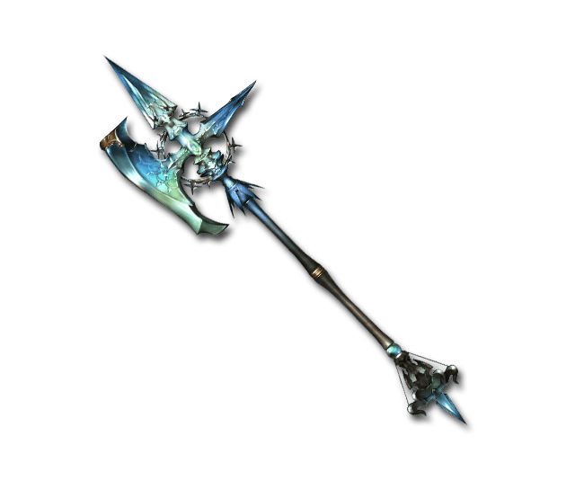

The game is primarily a turn based fighting game. Much like a traditional turn based strategy game, players take turns when playing and are able to perform a certain set of actions on their turn. Once a person sees the main menu they are able to choose between several weapons and trinkets, before they can proceed to the main gameplay. The weapons and weapon attacks are broken down into elemental damage categories.
Weapons:

Phlegestos, The Sword Of Flames (Boosts Attack) Fire
It is unknown who forged the great Sword of Flames. Some say Hephaestus, others the Dark Lord himself. What
is known is the devastating abilities it has and its devouring flame that burns opponents to cinders. Out of
all the weapons, this is truly the hardest to master, let alone wield.

Tidus, The Spear Of Ocean (Boosts Defense) Water
Neptune forged the Legendary Spear of Ocean deep in the bowels of the sea. Imbued with all the rage and fury
of the stormy seas and great typhoons, it requires a strong user to bend its aquatic fortitude to their
will.

Acceleron, The Bow Of Wind (Boosts Agility) Air
Apollo has been attributed as the maker of this mighty weapon, however whether this is true or a fabrication
has been lost to time… The range it employs combined with its magical abilities can create a truly
devastating crescendo of onslaught.

Terragos, The Axe Of Land (Boosts Vigor) Earth
The shield of earth was forged by the earth mother gaia herself to defend the planet against any who seek to
destroy it. More defensive then offensive the shield can wielded as a powerful tool by one who’s resolve is
as strong as mountains.
Accessories:
Gauntlet Of Smoldering Embers
Each character that is made has one weapon and one accesory, but both cannot be from the same element (example fire and fire). How damage is dealt is essentially like rock paper scissors, and is allotted in the following way:
Earth damage does double damage against air Air damage does double damage against water Water damage does double damage against fire Fire damage does double damage against earth
Choose wisely, as your weapon and trinket combination choice will impact how well a player does in their match.
The left and right buttons present your methods of attack. The element you attack with will then become the one you defend with on your opponent's turn.
Two buttons based on the weapon or element you chose and you can choose to attack by clicking either of those buttons D8+ attack, reduced by the opponents defense.
There is also a chance to miss, D20 vs. the opponents armor class ((agility + defense/2) + 10) If you meet or beat the AC you land the hit and do the damage. Other player (the computer) then has their turn After their turn commences it goes back to you to do actions. Gameplay resumes back and forth until a players health( vigor*5) is reduced to zero Health vigor *5 Get your opponent's health to zero and you progress to the next round! Reach the finals and you may face the Dark Lord himself... Now go forth, and test your might!